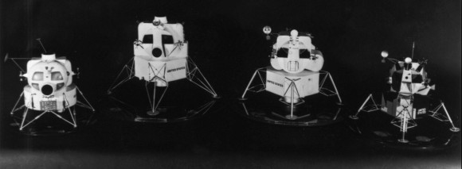
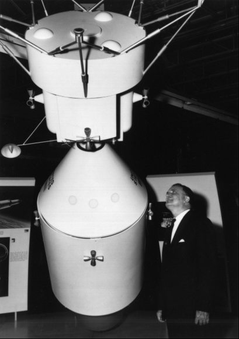
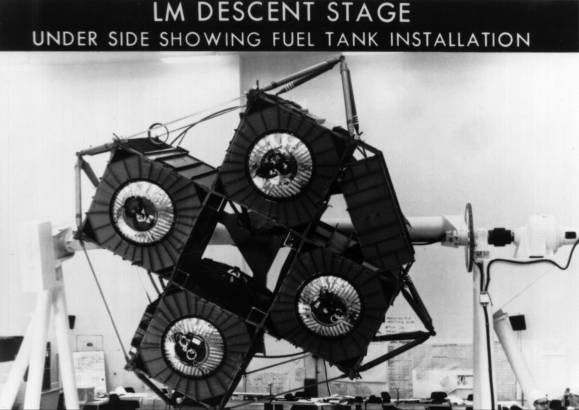
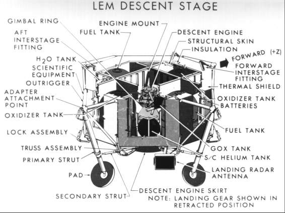

Houston and Grumman engineers had spent a month in negotiations and technical groundwork before signing the contract on 14 January 1963. Although ratification by NASA Headquarters was not forthcoming until March, Grumman forged ahead, devoting most of the first three months to establishing a practical external shape for the vehicle.1
Cooperation between customer and contractor got off to a fast start. In late January, officials from the Houston Apollo office visited Grumman to review early progress, to schedule periodic review meetings, and to establish a resident office at Bethpage similar to the one already operating in Downey. Then, following a tradition that had proved effective in other programs, the Houston office set up spacecraft and subsystem panels to carry out technical coordination. Thomas J. Kelly had directed Grumman's Apollo-related studies since 1960, earning for himself the title "father of the LEM," but the vehicle that finally emerged was a "design by committee" that included significant suggestions from the Houston panels, notably Owen E. Maynard's group2

Lunar module generations from 1962 (above left; the vehicle originally proposed by Grumman) to 1969 (a model of the version that landed on the moon). The second and third from the left are renderings for 1963 and 1965.
Using Grumman's initial proposal for the lunar module as the departure point for continuing configuration studies and refining subsystem requirements, the team that had guided the company through its proposal spearheaded the design phase. When the contractor assigned 400 engineers to this task, an optimistic air about how long it would take pervaded both Bethpage and Houston. The job took longer than the six to nine months originally anticipated, however, because of special efforts to guard against meteoroids and radiation and to incorporate criteria imposed by the unique lunar environment.

NASA Administrator James Webb examines models of the lunar and command modules in docked position.

The underside of the lunar module descent stage shows fuel tank installation.

The drawing of the stage indicates positions of components.
Basic elements in Grumman's proposal remained the same: the lunar module would be a two-stage vehicle with a variable-thrust descent engine and a fixed-thrust ascent engine; and the descent stage, with its landing gear, would still serve as a launch pad for the second, or ascent, stage.* But almost everything else changed. As a first step in defining the configuration, Grumman formed two teams to study the ascent stage. One group examined a small cabin with all equipment mounted externally, and the other studied a larger cabin with most equipment internal. The findings of the two teams pointed to something in between. The spacecraft that ensued was ideally suited to its particular mission. Embodying no concessions to aesthetic appeal, the result was ungainly looking, if not downright ugly. Because the lunar module would fly only in space (earth orbit and lunar vicinity), the designers could ignore the aerodynamic streamlining demanded by earth's atmosphere and build the first true manned spacecraft, designed solely for operating in the spatial vacuum.3
At a mid-April 1963 meeting in Houston, Grumman engineers presented drawings of competing configurations, showing structural shapes, tankage arrangements, and hatch locations. Grumman and Houston officials then worked out the size and shape of the cabin, the docking points, and the location of propellant tanks and equipment. The basic structure and tankage arrangement was cruciform, with four propellant tanks in the descent stage and a cylindrical cabin as the heart of the ascent stage, which also had four propellant tanks. Still to be resolved were questions of visibility, entrance and exit, design of the descent engine skirt (which must not impact the surface on landing), and docking and hatch structures.4
In late April and early May, Maynard (chief of spacecraft integration in MSC's Spacecraft Technology Division) summarized for Director Robert Gilruth the areas still open for debate, especially the landing gear and the position of the landing craft inside the launch vehicle adapter. Another sticky question, he said, was the overall size of the vehicle, which dictated the amount of propellants needed to get down to the moon and back into orbit. The lunar module structure, especially the descent stage, would be wrapped around the tanks; as the tanks were enlarged, the vehicle design would have to grow to accommodate them. There was one ray of light, however; Marshall was talking about increasing the lifting capability of the Saturn V launch vehicle from 40,800 kilograms to 44,200. With that capability, the target weight for the lander could be pegged at between 12,700 and 13,600 kilograms, instead of the 9,000 kilograms listed in the proposal.5
One early concern, though not directly connected with external design, was the firing of the ascent engine while it was still attached to its launch pad, the descent stage. The exhaust blast in the confined space of the interstage structures - called FITH for fire-in-the-hole - could have untoward effects. Some observers feared that the shock of engine ignition might tip the vehicle over. And what would happen if the crew had to abort during descent, shed the descent stage, and return to lunar orbit? This would require extra fuel, posing yet another weight problem. Scale model tests in 1964 allayed these misgivings to some degree, but the real proof had to wait for a firing test in flight of a full-scale vehicle.6
Although the descent structure, with its four propellant tanks, appeared practical from the standpoint of weight and operational flexibility, the ascent stage was harder to pin down. Nearly two years passed before the cabin face, windows, cockpit layout, and crew station designs were settled. By late 1963 Grumman engineers had begun to worry about the weight and reliability of the four-tank arrangement, with its complicated propellant system. They recommended changing to a two-tank model, and Houston concurred. Redesign delayed the schedule ten weeks at an added cost of $2 million, but the system was much simpler, more reliable, and lighter by 45 kilograms. Yet the change brought its own problems. Because oxidizer was heavier than fuel, four tanks had allowed the engineers to put one tank of each on either side of the cabin for balance. With only two tanks, some juggling had to be done to maintain the proper center of gravity. The fuel tank was moved farther outboard than the oxidizer, giving a "puffy-cheeked" or "chipmunk" appearance to the front of the vehicle.7
Also shaping the face of the ascent stage were its windows. Windows were basic aids for observation and manual control of the spacecraft, and the pilots expected to use them in picking the landing site, judging when to abort a mission, and guiding the spacecraft during rendezvous and docking with the command module.
The importance of visibility was recognized early in Houston's studies and stressed in Grumman's original proposal. In both, large windows afforded an expansive view. Grumman had featured a spherical cabin like that of a helicopter, with four large windows so the crew could see forward and downward. This design was discarded because large windows would require extremely thick glass and a strengthening of the surrounding structure. The environmental control system would have trouble maintaining thermal balance. Two smaller windows could replace the four large ones, but the field of view would have to remain very much the same. To get the required visibility with smaller and fewer windows, Grumman had to abandon its spherical cabin design. The new cylindrical cabin had a basically flat forward bulkhead cut away at various planar angles; the large, convex windows gave way to small, flat, triangular panes (about one-tenth of the original window area canted downward and inward to afford the crew the fullest possible view of the landing area.8
Grumman's change to a cylindrical cabin posed another problem. A spherical shape is simple from a manufacturing standpoint, because of the relative ease in welding such a structure. The new window arrangement and front face angularity made an all-welded structure difficult. The Grumman design team wrestled with the new shape and in May 1964 adopted a hybrid approach. Areas of critical structural loads would be welded, but rivets would be used where welding was impractical. Grumman neglected to inform Houston of the switch in manufacturing processes, but a Houston engineer noticed the combination of welding and riveting while on a visit to Bethpage.
Toward the end of May, there was a series of reviews and inspections of Grumman's manufacturing processes. NASA representatives looked at welding criteria, mechanical fastening techniques, and the behavior of sealant compounds under temperature extremes and a pure oxygen atmosphere. The contractor demonstrated that its part-riveted structure showed very low oxygen-leak rates in testing. Although Manned Spacecraft Center officials tentatively approved the change, they left an engineer from the MSC Structures and Mechanics Division in Bethpage to watch Grumman closely. Marshall experts visited Grumman from time to time to extol the virtues of an all-welded design and to warn of the problems of mechanical fabrication. But the peculiarities of the lunar module made a mix of the two techniques almost inevitable.9
* The descent engine had another possible chore: to act as a backup propulsion system if the service module engine failed to fire on its way to the moon. No special modification to the descent engine was required, but the docking structure on the spacecraft had to be strengthened to withstand the shock of the firing.
1. Ernest W. Brackett to Assoc. Admin., NASA, "Go-ahead of LEM contract," 11 Jan. 1963, annotated, "1/11/63 3:30 p.m. - Seamans' office (Mary Turner) says Webb has initialed 'go ahead.' Called Dave Lang and gave him the go-ahead"; James L. Neal memo, "Distribution of Contract NAS 9-1100 and Exhibits 'A' through 'E,'" 19 March 1963, with enc., "Contract for Project Apollo Lunar Excursion Module Development Program," signed 14 Jan. 1963 by Neal for MSC and E. Clinton Towl for Grumman; Raymond L. Zavasky, recorder, minutes of MSC Senior Staff Meeting, 4 Jan. 1963, p. 5; Robert S. Mullaney, interview, Bethpage, N.Y., 2 May 1966.
2. MSC Director's briefing notes for 29 Jan. 1963 Manned Space Flight Management Council (MSFMC) Meeting; MSC, "Consolidated Meeting Plan, Initial Issues," MSC-ASPO, 18 Feb. 1963. Much of the material on the LEM was brought to the authors' attention by William F. Rector III, who graciously allowed us to use his personal papers and notebooks, in which he set down day-to-day events all during his tenure as LEM Project Officer (PO) for MSC; Mullaney interview.
3. Saul Ferdman, interview, Bethpage, 2 May 1966; Rector to PE, "Request for study effort data," 13 March 1964; Rector to LEM Proc. Off., "Request for CCA for Study Efforts," 6 May 1964; James L. Decker to Grumman, Attn.: Joseph G. Gavin, Jr., "LEM Program Status," 10 July 1963; Jerry L. Modisette to ASPO, MSC, Attn.: Robert L. O'Neal, "Report on discussions of RCA and Grumman radiation work at Grumman, July 11 1963," 24 July 1963; Decker to Grumman, Attn.: Mullaney, "Meteoroid Environment," 16 Oct. 1963; Apollo Mission Planning Task Force, "Use of LEM Propulsion Systems as Backup to Service Module Propulsion System," 27 July 1964; Milton B. Trageser to MSC, Attn.: R. Wayne Young, "Impact of LEM Propulsion Backup to Service Propulsion System," 16 Sept. 1964; Owen E. Maynard memo, "Action items," 1 Dec. 1964; Dale D. Myers to Dep. Admin., NASA, "LM 'Lifeboat' Mode," 3 Aug. 1970, with encs.; Thomas J. Kelly and Eric Stern, interviews, Bethpage, 3 May 1966; Mullaney interview; Rector, interview, Redondo Beach, Calif., 27 Jan. 1970; Kelly, "Apollo Lunar Module Mission and Development Status," paper presented at AIAA 4th Annual Meeting and Technical Display, AIAA paper 67-863, Anaheim, Calif., 23-27 Oct. 1967, pp. 6-7; Stanley P. Weiss, "Lunar Module Structural Subsystem," Apollo Experience Report (AER), NASA Technical Note (TN) S-345 (MSC-04932), review copy, June 1972.
4. MSC, LEM Mechanical Systems Meeting no. 2, "LEM Configuration," 17 April 1963; Grumman, "Vehicle Configuration Study Briefing," 17 April 1964; Grumman Monthly Progress Report (hereafter cited as Grumman Report) no. 3, LPR-10-6, 10 May 1963, pp. 3-4, 7-8; notes, Maynard, "Design Approach Tentatively Agreed Upon" [ca. April 1963], with encs.
5. MSC Director's briefing notes for 30 April 1963 MSFMC meeting; Kelly to MSC, Attn.: Robert O. Piland, "LEM Propulsion Tank Sizing," 28 Feb. 1963; Zavasky, minutes of MSC Senior Staff Meeting, 3 May 1963, p. 4.
6. MSC Consolidated Activity Report for Assoc. Admin., OMSF, NASA, 19 July-22 Aug. 1964, p. 23.
7. Grumman Reports nos. 10, LPR-10-26, 10 Dec. 1963, p. 16, and 11, LPR-10-27, 10 Jan. 1964, p. 1; Project Apollo Quarterly Status Report no. 6, for period ending 31 Dec. 1963, p. 3; Rector to Grumman, Attn.: Mullaney, "LEM Program Review," 17 Jan. 1964; Stern interview; Rector to LEM Proc. Off., "Change from 4-Tank to 2-Tank Configuration Ascent Stage," 24 March 1964.
8. Robert R. Gilruth and L[ee] N. McMillion, "Man's Role in Apollo," paper presented at Institute of Aerospace Sciences Man-Machine Competition Meeting, IAS paper 62-187, Seattle, Wash., 10-11 Aug. 1962, pp. 5, 10-11; Robert W. Abel, "Lunar Excursion Module Visibility Requirements," NASA Program Apollo working paper No. 1115, 15 June 1964; [Grumman], "Some Notes on the Evolution of the LEM," typescript by unknown author, 8 Aug. 1966, p. 1; Orvis E. Pigg and Stanley P. Weiss, "Spacecraft Structural Windows," AER TN S-377 (MSC-07074), review copy, July 1973.
9. MSC, ASPO Weekly Management Reports, 7-14 May and 28 May-4 June 1964; Mullaney interview; Rector TWX to Grumman, Attn.: Mullaney, 22 May 1964; LEM Contract Eng. Br. (CEB), "Accomplishments," 11-17 June 1964; Rector to Grumman, Attn.: Mullaney, "Manufacturing Review Meeting," 16 June 1964, and "LEM structural design and fabrication," 22 June 1964; Joseph F. Shea to MSFC, Attn.: Harold Landreth, "Request for meeting at MSFC concerning joining methods for spacecraft," 23 June 1964; Rector to Grumman, Attn.: Mullaney, "Meeting at MSFC concerning joining methods for spacecraft," 22 June 1964; W. Richard Downs to Chief, Structures and Mechanics Div., "Report of trip of Dr. W. R. Downs to Marshall Space Flight Center, Huntsville, Alabama, on June 30, 1964," 8 July 1964.